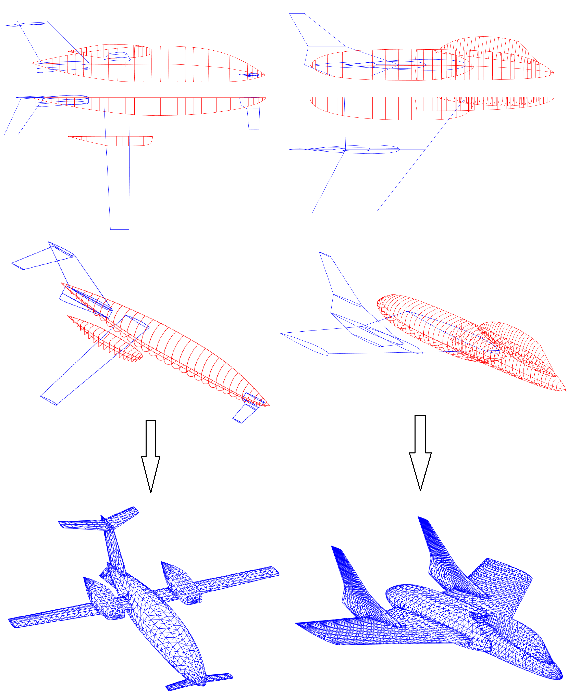

Generiranje mreže
- Mesher generira zatvorenu vodonepropusnu trokutastu mrežu, na kojoj se mogu primjeniti razni tipovi panelnih elemenata
- Geometrija zrakoplova se definira parametarski u samom programu, bez uporabe vanjskih CAD programa
- Objekti klase "trup" definiraju se standardnim postupkom conic lofting, a objekti klase "krilo" definiraju se ekstruzijom profila koji se učitavaju izvana kao popis točaka
- Inicijalno, svaki pojedini objekt je definiran kao zatvorena trokutasta mreža
- Nakon toga, pokretanjem meshiranja svaka dva objekta koji se međusobno presjecaju budu zakrpani zajedno tako da čine jednu zatvorenu mrežu
- Proces spajanja se automatski ponavlja sve dok ne preostane jedna zatvorena mreža koja obuhvaća sve definirane objekte
- Na ovaj način moguće je definirati razne složene geometrije, spremne za primjenu panelnih metoda, jednostavnije nego primjenom općenamjenskih komercijalnih CAD programa
